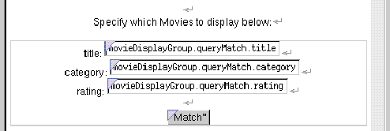

Creating a WebObjects Database Application
 Table of Contents
Table of Contents  Previous Section
Previous Section
Bindings in the Query Part
In the query part of the component, movieDisplayGroup.queryMatch.title is bound to the Title text field. There are similar bindings to the Category and Rating text fields. The queryMatch bindings allow users to specify search criteria to use when movieDisplayGroup next fetches movies. The Match button is bound to movieDisplayGroup.qualifyDataSource, which actually performs the fetch.
For example, to display only R-rated comedies, a user types "Comedy" in the Category text field, types "R" in the Rating text field, and clicks the Match button. movieDisplayGroup then refetches, selecting only movies whose category values are set to Comedy and whose rating values are set to R.

Table of Contents  Next Section
Next Section